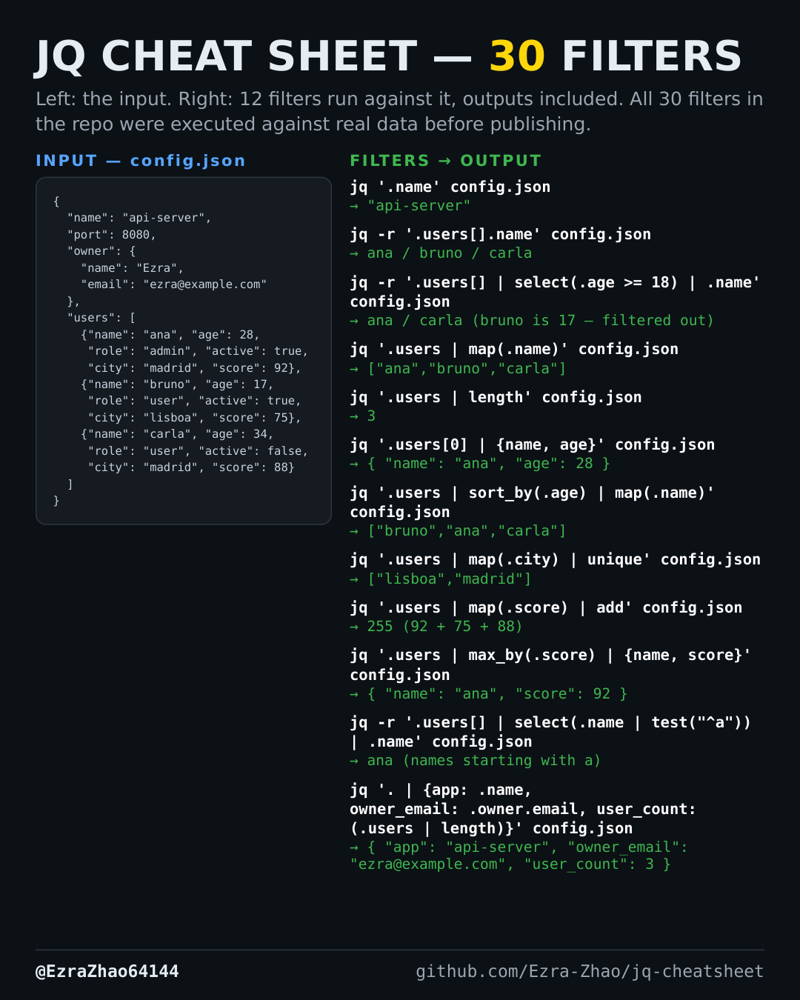

Cheatsheet Pages / jq Cheatsheet
How to convert types and split or join strings with jq
The API is inconsistent: ages arrive as numbers but you need strings — or a comma-joined string needs to become an array.
Every filter was executed against the cheatsheet's sample config.json with jq 1.7 before publishing; the sample file sits at the bottom of the cheatsheet so you can reproduce every output.
jq '.users | map(.age | tostring)' config.json
# output: ["28","17","34"]
echo '"42"' | jq 'tonumber + 8'
# output: 50
echo '"a,b,c"' | jq 'split(",")' # -> ["a","b","c"]
jq -n -r '["a","b","c"] | join("; ")' # -n = null input; -> a; b; cGood to know
tostring and tonumber normalize a field's type before comparing or concatenating; split and join convert between strings and arrays.
